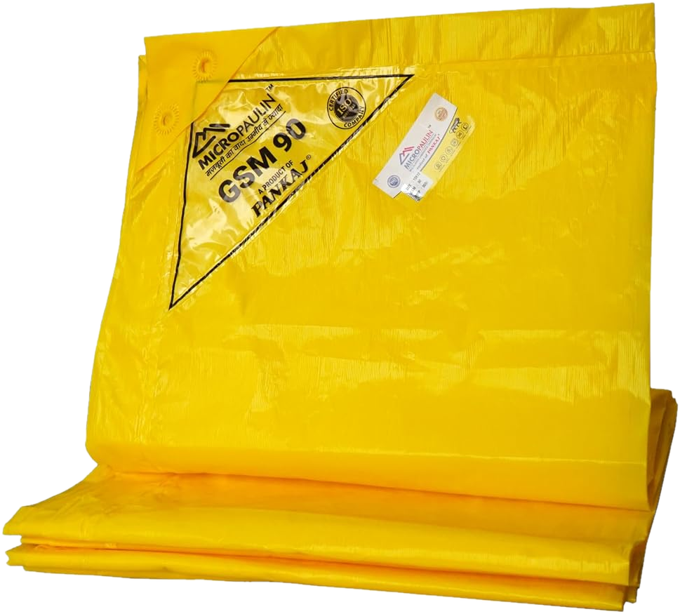
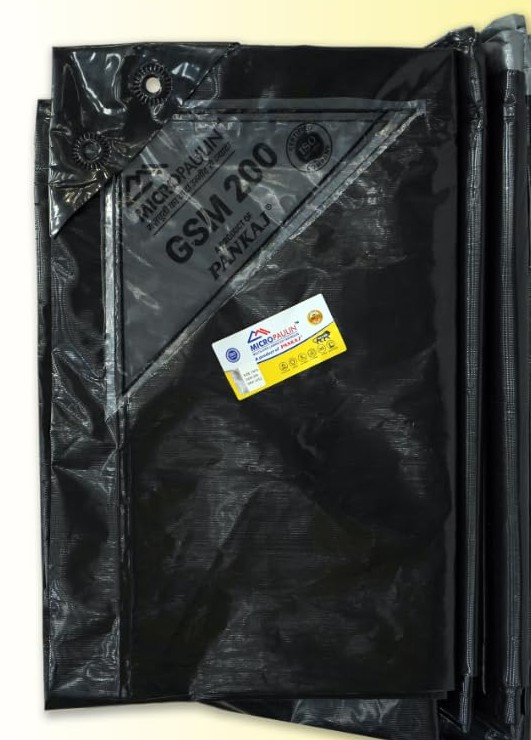

Waterproof polyethylene sheets, laminated in layers, that stretch far before they tear. For truck covers, relief shelters, site covers and lining.
4 grades90GSM120GSM150GSM200GSM25 sheet sizes6′ × 6′ to 50′ × 50′

700%+elongation at break, both directions
50,000flex cycles passed, before and after ageing
2,700 gftear strength, transverse
Lab results for 200 GSM Micropaulin, manufacturer's Certificate of Analysis, October 2026.
Exported by Grace Ferro Exports Pvt Ltd, Indiawww.graceferroexports.com
Micropaulin™ Multilayer tarpaulinProduct 02
The exporter
Grace Ferro Exports
A Coimbatore-based export house supplying overseas buyers. We are the distributor and exporter of Micropaulin™ tarpaulin.
We handle your order end to end: specification, sampling, export packing, documentation and shipment from Indian ports. Grace Ferro exports to 16 countries across Europe, the Gulf, Asia, Africa and North America.
IEC
GST
MSME
FIEO member
APEDA
ISO quality assurance
DUNS 931865379
REX registered
The product
Micropaulin™ by PANKAJ®
A tarpaulin made from layers of polyethylene film laminated into one sheet. It is light to lift, keeps water out and gives under load instead of splitting.
Micropaulin is made in India by an ISO 9001:2015 certified manufacturer. It comes from the same PANKAJ® range as Crosspaulin™ cross-laminated tarpaulin.
Construction
Film layers, laminated into one sheet
There is no woven base, so there is no weave to fray or let water through. Each face can carry its own colour: the 200 GSM grade below has a silver face and a black face.

200 GSM black/silver sheet, with eyelets and the printed grade mark.
4 grades90, 120, 150 and 200 GSM
25 sizes6′ × 6′ to 50′ × 50′ sheets
Eyeletsalong the edges, for roping down
Rollsalso available, for converters
Micropaulin™ · Exported by Grace Ferro Exports Pvt Ltd02
Micropaulin™ Multilayer tarpaulinPerformance 03
Why Micropaulin
Tough where covers usually fail
Covers fail at the edges, at the folds and in the wind. These are the properties that decide how long a sheet lasts, with lab figures for the 200 GSM grade.
Waterproof
A continuous film with no weave. Passed the water-proofness test.
Stretches, not splits
Elongation at break above 700% both ways, so gusts and tight ropes are absorbed.
Tear-resistant
2,200 gf along the roll and 2,700 gf across it, which helps around eyelets.
Folds without cracking
Passed 50,000 flex cycles, both new and after ageing.
Impact-resistant
Dart impact of 380 g, for loads with corners and falling debris.
UV-protected
Made for outdoor use and stated by the manufacturer to be UV-protected.
Certificate of Analysis 200 GSM, black/silver
Test
Unit
Machine direction
Transverse direction
Weight
g/m²
196 (specification 200 ± 10%)
Density
g/cm³
0.928
Tensile strength
kg/cm²
223 (21.9 MPa)
204 (20.0 MPa)
Elongation at break
%
723
708
Tear strength
gf
2,200
2,700
Dart impact
g
380
Water-proofness
–
Pass
Flex, 50,000 cycles
–
Pass before ageing · Pass after ageing
Visual
–
Satisfactory
Results for one production lot, from the manufacturer's quality control, dated 31 October 2026. Typical values; confirm with your order.
Need test data for your tender?
We can send the signed certificate for the 200 GSM grade and request results for the grade, colour and lot you order.
Micropaulin™ · Exported by Grace Ferro Exports Pvt Ltd03
Micropaulin™ Multilayer tarpaulinRange 04
Product range
Four grades, 25 ready sizes
Choose by weight. Heavier grades are for longer outdoor exposure and rougher handling; lighter grades are easier to lift and tie down. Every size comes in every grade.
90GSM
Weight
90 g/m² · 2.7 oz/yd²
Colour
Yellow pictured
120GSM
Weight
120 g/m² · 3.5 oz/yd²
Colour
On request
150GSM
Weight
150 g/m² · 4.4 oz/yd²
Colour
On request
200GSM
Weight
200 g/m² · 5.9 oz/yd²
Colour
Black/silver, lab-tested
Nominal weight per sheet in kg, by GSM
Size (ft)
Size (m)
Area
90
120
150
200
6′ × 6′
1.8 × 1.8 m
3.3 m² (36 sq ft)
0.3
0.4
0.5
0.7
9′ × 6′
2.7 × 1.8 m
5.0 m² (54 sq ft)
0.5
0.6
0.8
1.0
9′ × 9′
2.7 × 2.7 m
7.5 m² (81 sq ft)
0.7
0.9
1.1
1.5
12′ × 9′
3.7 × 2.7 m
10.0 m² (108 sq ft)
0.9
1.2
1.5
2.0
12′ × 12′
3.7 × 3.7 m
13.4 m² (144 sq ft)
1.2
1.6
2.0
2.7
15′ × 9′
4.6 × 2.7 m
12.5 m² (135 sq ft)
1.1
1.5
1.9
2.5
15′ × 12′
4.6 × 3.7 m
16.7 m² (180 sq ft)
1.5
2.0
2.5
3.3
15′ × 15′
4.6 × 4.6 m
20.9 m² (225 sq ft)
1.9
2.5
3.1
4.2
18′ × 12′
5.5 × 3.7 m
20.1 m² (216 sq ft)
1.8
2.4
3.0
4.0
18′ × 15′
5.5 × 4.6 m
25.1 m² (270 sq ft)
2.3
3.0
3.8
5.0
21′ × 15′
6.4 × 4.6 m
29.3 m² (315 sq ft)
2.6
3.5
4.4
5.9
21′ × 18′
6.4 × 5.5 m
35.1 m² (378 sq ft)
3.2
4.2
5.3
7.0
24′ × 12′
7.3 × 3.7 m
26.8 m² (288 sq ft)
2.4
3.2
4.0
5.4
24′ × 15′
7.3 × 4.6 m
33.4 m² (360 sq ft)
3.0
4.0
5.0
6.7
24′ × 18′
7.3 × 5.5 m
40.1 m² (432 sq ft)
3.6
4.8
6.0
8.0
24′ × 21′
7.3 × 6.4 m
46.8 m² (504 sq ft)
4.2
5.6
7.0
9.4
27′ × 24′
8.2 × 7.3 m
60.2 m² (648 sq ft)
5.4
7.2
9.0
12.0
30′ × 12′
9.1 × 3.7 m
33.4 m² (360 sq ft)
3.0
4.0
5.0
6.7
30′ × 18′
9.1 × 5.5 m
50.2 m² (540 sq ft)
4.5
6.0
7.5
10.0
30′ × 24′
9.1 × 7.3 m
66.9 m² (720 sq ft)
6.0
8.0
10.0
13.4
30′ × 30′
9.1 × 9.1 m
83.6 m² (900 sq ft)
7.5
10.0
12.5
16.7
36′ × 30′
11.0 × 9.1 m
100.3 m² (1080 sq ft)
9.0
12.0
15.1
20.1
40′ × 30′
12.2 × 9.1 m
111.5 m² (1200 sq ft)
10.0
13.4
16.7
22.3
40′ × 40′
12.2 × 12.2 m
148.6 m² (1600 sq ft)
13.4
17.8
22.3
29.7
50′ × 50′
15.2 × 15.2 m
232.3 m² (2500 sq ft)
20.9
27.9
34.8
46.5
Nominal weights, calculated as GSM × area; they exclude hems and eyelets. Metric sizes are rounded. Confirm finished sizes, colours and roll dimensions with your order.
Micropaulin™ · Exported by Grace Ferro Exports Pvt Ltd04